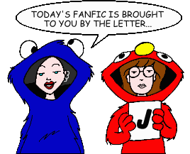
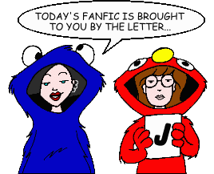

Fan Fiction
"J" by Author

Fan Fiction
"J" by Author

|
Authors: If you no longer wish for any of your stories to be posted, please send e-mail to fanfic@lawndale.net and I will remove them at once. |
| J (Incubus637@aol.com) |
| Don't Call Him "Hearing Impaired" Category: Series & Multi-Part Stories (Miscellaneous) A new family moves to Lawndale, and Damien (who's deaf) begins life at Lawndale High, aided by his "personal interpreter," Daria. Set during Daria's senior year. |
| J Osako |
| Blood and Irony Category: Sci-Fi, Fantasy & Horror Daria and Jane have developed psychic abilities and they have reason to believe that the death of one of the school's coaches may have had a supernatural cause. |
| Geneological Exam Category: School Situations Today's assignment: "an oral presentation on your family tree." Little does Mr. O'Neill know what surprises lurk in Morgendorffer family's past. |
| Jae Ouyang (jouyang@home.com) |
| Canadian, eh? Category: Miscellaneous Tiffany's cousin from Canada comes for a visit and ends up befriending Daria and Jane. The three girls hatch a plan to mortify the Fashion Club. |
| jak981125 (jak981125@yahoo.com) |
| A Hard Dazed Night Category: Crossovers & Parodies The setting is 1964 London, where a band -- ironically called Mystik Spiral -- is about to take a train ride... A parody of the Beatles' film "A Hard Day's Night." |
| Mystik SPIRAL (The White Fic) Category: Crossovers & Parodies This time, the author's gone too far as the Spiral takes on the Beatles' "white album." Sorry, Eric Clapton refused a cameo. |
| Mystik Spiral's Lonely Lawndale Band Category: Crossovers & Parodies Enjoy the concert of the season as Mystik Spiral takes on Sgt. Pepper in a 9/11 benefit. A splendid time is guaranteed for all! |
| Our Drummer's Rusty Van Category: Crossovers & Parodies A Mystik Spiral parody of the Beatles' Yellow Submarine, but with a few twists. WARNING: contains enough dumb jokes to fill the Albert Hall! |
| Shabby Road Category: Crossovers & Parodies Sit back and enjoy as Mystik Spiral parodies the classic Beatles album "Abby Road." |
| James Burrows |
| Strangers in Royston Vasey (*) Category: Crossovers & Parodies The Morgendorffers take an ill-advised holiday abroad, in an even more ill-advised crossover with The League of Gentlemen. |
| James Stewart |
| Feelings Category: Romance Jane and Daria's friendship starts to grow into something more. Everything would be fantastic if it weren't for all that damn thinking getting in the way... |
| Jane (hello_kitty_28@yahoo.com) |
| Daria Goes To a Sleepover Category: Romance Daria goes to sleep at Jane's house, where a lot of things happen over the course of the evening (some good, some bad!). |
| Day at the Water Park Category: Romance Daria and Jane go on a school-mandated trip to a water park. Trent is there, too. Shipper action ensues. |
| Food Fight Category: Romance Daria and Jane get caught in the middle of a food fight at school. Trent picks them up. Shipper action ensues. |
| Jesse's Girlfriends Category: Romance Jesse's girlfriend dumps him, Jane has no friends when the story starts, Daria has just moved in, and Trent finds Jesse in love (guess with whom!). |
| Lawndale High's Picnic Category: Romance Daria and Jane go on a school-mandated picnic. Trent and Jesse are there, too. Shipper action ensues. |
| Letters Category: Romance Letters get exchanged -- inadvertantly -- between Jane, Daria, and Trent. |
| A New Student in Lawndale [Artwork] Category: Romance One of Trent's idols comes to live in Lawndale, and he goes out with her in an attempt to make Daria jealous. |
| A Show is Not Only a Show Category: Romance Jane, Trent, and Jesse are going to a Korn concert. Daria is asked to come along. Shipper action ensues. |
| Trent and Jane's Party Category: Romance Trent, Jane, and Jesse have a party. Daria is there, too. Shipper action ensues. |
| Janelane386 (Janelane386@aol.com) |
| Twisted [Artwork] Category: Sci-Fi, Fantasy & Horror Set during the events of "Dye! Dye! My Darling," Jane goes to the Lawndale River right before she goes to Daria's, just to get her thoughts straight. There, she meets a familiar friend. |
| jBONE |
| Daria's Guide to the Galaxy Category: Crossovers & Parodies Andrea reveals herself to be an alien, and the Earth is destroyed to make way for a superspace highway. And that's only the beginning of the adventure. Be sure to bring your towel in this parody of Douglas Adams' "The Hitchhiker's Guide to the Galaxy." |
| Jeff Cuscutis (cuscutis@ispchannel.com) |
| Afterglow Category: Romance "Is It Fall Yet?" ended with Tom and Daria making out in his car. But what happened immediately afterward? |
| The Prom Category: School Situations Daria goes to the Prom. Set during her senior year. Some sisterly bonding. |
| Jen (jenc_84@yahoo.com) |
| Better Times Than These Category: Past & Future As children, Daria and Quinn battle sharing a room, babysitters, parents, and a clown?! As new Lawndale citizens, Jane and Trent deal with leaving their childhood home and encounter a few other familiar characters. |
| Jenna |
| Carnival Category: Romance Daria and Jane's class goes on a trip to a carnival - Trent and Jesse come along. |
| Janey's Dilemma Category: Romance Jane faces a moral dillema. |
| Jennie Shephard (jenshep49@hotmail.com) |
| End of the World Category: Alternate History What if Quinn wasn't totally shallow, but a brain instead? Is it the world coming to an end? No, just a lot of fun, plus a few yeta acts from Jane and Quinn. |
| Jerry Scanlan (scanlan@tcac.net) |
| Melody Powers a.k.a. Daria Morgendorffer Category: Miscellaneous It's no coincidence that Daria wrote those Melody Powers stories... |
| Jesse Baker |
| Flash in the Pan Category: Miscellaneous When N'Sync plays a concert at Lawndale, Daria gets involved in a plot by Trent and Mystik Spiral to interrupt the concert by running on stage and streaking everyone there. |
| Jessica S. (girlsrule725@aol.com) |
| The Princess Daria Diaries Category: Crossovers & Parodies Daria finds out that she is really a princess, which forces her to make a choice: be a princess and move out of Lawndale, or remain a Morgendorffer and stay with her family. |
| Jesty |
| Which Sis is Which? Category: Miscellaneous Daria and Quinn switch places for a day |
| Jill Friedman (Serra44@aol.com) |
| Beneath the Blue Suburban Skies Category: Miscellaneous What caused Penny Lane to leave Lawndale and wander the jungles and villages of Central America? Here's one possible answer, as Penny returns to Casa Lane haunted by memories of her past. |
| Chelsea Hotel Category: Romance The jilted Lane siblings do everything in their power to get Daria back... even taking Quinn to New York City! |
| O Holy Nightmare Category: Holidays When Tom invites Daria to the Sloane's Christmas party, Daria has to endure the ultimate humiliation: allowing Quinn and Helen to help her find an appropriate ensemble. But that turns out to be nothing compared to what happens when she actually gets there! |
| Virgin Sacrifice Category: Miscellaneous Daria and Jane experience "The Rocky Horror Picture Show" for the first time, and they get a few surprises... |
| Jill Palmer (cimorene@mydaria.zzn.com) |
| Absentee Category: School Situations Mayhem and mischief ensue when a new girl -- the spitting image of Fashion Club president Sandi Griffin -- arrives at Lawndale High. |
| Balance of Power Category: Miscellaneous Quinn meets top-of-the-pecking-order pressure. Crystal meets Trent and Jesse. Jane gets hurt. You, the reader, meet a different Crystal than Daria & Company know. Confused? Read on! |
| A Cynical Guide to the Galaxy Category: Series & Multi-Part Stories (Crossovers & Parodies) It's not what you expect... no, wait, it *is* what you expect: a take-off of Douglas Adams' wild and weird sci-fi novel series, "The Hitchhiker's Guide to the Galaxy." |
| Everything's Cool and Froody (*) Category: Miscellaneous A cynical teenager prone to arguing with her mother is placed in Lawndale High's self-esteem class. Sound familiar? It's probably not what you think. |
| The Halloween Spirit (*) Category: Holidays Only at Halloween would Brittany get the idea to have a costume party. And only on Halloween would things get as spectacularly wonky as they do... |
| Hey, You Look Like Jane! [Artwork] Category: Miscellaneous Daria and Jane return from Christmas break to find a new student who looks exactly like Jane! See what happens to "Laaawndale Hiiigh" when Sara Dunaway moves to town. Featuring characters from Canadibrit's "Look-Alike Series." |
| Jesse's Girl (*) Category: Romance An "alternate universe" take on the events of "Jane's Addition." |
| A Love/Hate Relationship Category: Miscellaneous Quinn is on fashion sabbatical. Again. Via her diary, she takes an in-depth look at her "friendship" with Sandi. |
| Makeup Your Mind Category: Miscellaneous Things get mucho weird in Lawndale with the arrival of a new makeup chain. Turns out the Fashion Club is behind it, and Daria and Jane have to stop it... with help from a few unexpected places. |
| New Direction Category: Miscellaneous Sandi kicks Quinn out of the Fashion Club. Daria notices something is wrong and offers to teach Quinn the ways of the nonconformist. See what happens to Daria, Quinn, Jane, and the FC when she accepts... |
| Slight Return Category: Miscellaneous Just after the events of "Is It Fall Yet?", Lawndale gets treated to some more supernatural weirdness, which hits a little close to home for Daria and Jane. Crossover with the novel Good Omens. |
| Woosh (*) Category: Miscellaneous A story from Andrea's point of view that explains a bit about her family, one of whom is thought fictional by the student body. |
| John Berry (berry@adelphia.net) |
| Behind the Glasses [Artwork] Category: Miscellaneous An exclusive behind-the-scenes look at the making of "Daria" fan fiction. Narrated by Jane's new beau, Tom, this exclusive production includes interviews with the cast and fanfic authors, and rare footage of "bloopers," outtakes, and never-before-seen stories. |
| Best Years of Our Lives, Revisited [Artwork] Category: School Situations Trent re-enrolls in high school after discovering he never officially graduated. |
| Bond, Jake's Bond Category: Miscellaneous Jake finds, to his dismay, that he really doesn't know his girls at all, so he decides to take Daria and Quinn on a road trip in an attempt to bond with them. Naturally, things don't turn out quite the way he expected. |
| The Education of Dumber-Than-A-Tree Category: School Situations Kevin is finally kicked off the team for his stupidity; guess who he gets to tutor him? Meanwhile, Quinn embarks on a quest to find the perfect name for herself after she finds out that "Quinn" is a unisex name. |
| Gone With the Whine [Artwork] Category: Miscellaneous Jodie's little sister, Rachel, has had enough of being ignored, so she runs away. Meanwhile, Helen's assistant, Marianne, also departs... on a vacation. |
| Herself, an Elf Category: Holidays It's Christmastime in Lawndale, and as you can imagine, it's not exactly Daria's favorite time of year. When she decides to get her family decent presents for a change, she is forced to take an embarrassing job in order to afford them. In the process, she gets a lot more in return than she expected... both bad and good. |
| Lovers' Lane Category: Miscellaneous Daria finally tires of Jane's little matchmaking act, and tells her to give it a rest (only not quite as nicely). What's a Yenta to do with all that pent-up love-match energy? Set up shop at Lawndale High and find the perfect match for any and all comers! Of course, things never go exactly as planned, do they? |
| My Quinn's Delayed Reaction [Artwork] Category: Miscellaneous "Quinn flaunts herself, you can't escape her, then uses guys like toilet paper." But what if she found the right person...? |
| She Was All That Category: Miscellaneous A quasi-sequel to Austin Covello's "A Day in the Life of Stacy." Stacy is thrown out of the Fashion Club for associating with "that loser geek," Ted DeWitt-Clinton. Friendless and directionless, Stacy turns to "the most exclusive clique in the whole town" for acceptance... but will Daria and Jane take her under their wings? |
| Silly Rabbit, Matrix Are For Kids! Category: Crossovers & Parodies The Keanu Reeves movie "The Matrix" (or possibly a brain aneurysm) provides the basis for this parody, in which Daria discovers what she's suspected all along: that "reality" is not what it seems. |
| John Wallace |
| Auld Lang Syne (*) Category: Miscellaneous A thought-provoking piece about how Daria and Jane might face New Year's Eve, 1999. |
| Jon Kilner (Sehala@aol.com) |
| Don't Know Jake Category: Miscellaneous Daria must face the price of success, and Jake finds himself in a crisis of conscience. |
| Jane Category: Past & Future In times of trouble, Daria often turns to her writing for solice. But this time, the pain may be too great for mere words to heal as she attempts to cope with the loss of the closest person in her life. |
| A Lane in Black Category: Past & Future Picking up where "A Lane in Red" left off, a grieving Jane has vanished and it's up to Daria and Trent to find her and bring her home. But home, with all its memories, is the last place Jane wants to be. |
| A Lane in Red Category: Past & Future When Jane is in trouble, Daria and Trent come running. But can even Jane's most trusted confidants help her through this crisis? (Set during the events of the story "Jane.") First of two parts, followed by "A Lane in Black." |
| The Last Days of Solitude [Artwork] Category: Miscellaneous Jane is alone and depressed until a new kid comes to Lawndale. See life from Jane's perspective as she encounters the new girl in town: Daria Morgendorffer. |
| The More Things Change... [Artwork] Category: Miscellaneous Daria is hurt when her latest accomplishment goes unnoticed by her parents. But she is not so alone as she thinks. You may be surprised to find out who rallies to her support. |
| On the Outside [Artwork] Category: Miscellaneous While Jane is out of town enduring a family gathering, Jodie tries to help Daria fit in by convincing her to attend a school dance. |
| That Stranger I Know So Well Category: Miscellaneous Daria and Jane are true friends, but their friendship may be threatened when Daria stumbles onto a secret from Jane's past that Jane wanted to keep buried. |
| jRev (jrevc@pacific.net.ph) |
| Conned Men [Artwork] Category: Miscellaneous Trent and Mystik Spiral get an offer from a mysterious man to open for a well-known rock band, whose tour stops at Lawndale. Trent is overjoyed, but Daria and Jane are suspicious. Meanwhile, Quinn wins four tickets, supposedly for a "boy band" concert in Lawndale. Coincidence? |
| Judith Wimer (bitemybedbugs@hotmail.com) |
| Train Chasing Category: Romance Daria and Jane chase Trent across the country. |
| Julia Wright (ssworldfan@aol.com) |
| Camping Chaos Category: Miscellaneous The students of Lawndale High go on a camping trip, while Mr. DeMartino comes up with a plot to kill one of our beloved characters. |
| Daria and Trent's Weekend Category: Romance Jane is tired of the flirting between Trent and Daria, so she handcuffs them together and lock them in the basement. |
| Trent's Baby?!!? Category: Romance Trent has to take care of a baby for a week, with the help of a friend. |
| Trent's Misery Category: Romance Daria and the gang go on a trip to California, which is ruined when one of them have an accident. |